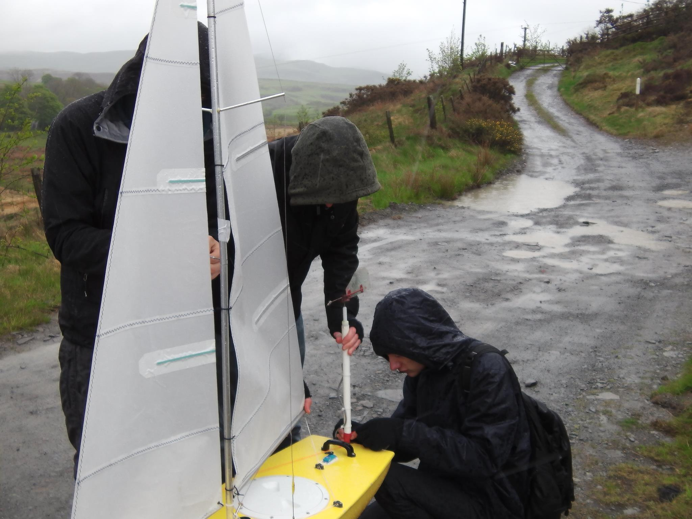

Today was meant to be our second autonomous test, but it didn't exactly go according to plan, first off, the weather, the wind and rain were far higher than we expected, measuring wind speeds of 15kts when we got out the car (although it later calmed down a bit).
Second, we got the boat rigged in record time, but problem, the Python code wasn't reading the GPS, Louis had managed to miss this trip and nobody was sure what had changed.
The code still wasn't working, but despite that we thought we'd make the most of the situation and do another RC test (because we need to be competent at RC sailing just in case), so we got the boat in the water and it was sailing fine ... for the first 5 minutes, then problem number three, the linkage connecting the rudder to its servo came unclipped, so we had no steering, we just had to hope that with some sensible sail control, we could steer it towards land.
This was all good until problem number 4 came into play, the chord which linked the sail winch to the sails lost tension and slipped off the winch, meaning that now we had no rudder or sail control, and the boat was stuck in the middle of the lake
Eventually after about half an hour of waiting the wind eventually managed to blow the boat slowly but surely into reach, we got it out of the water, de-rigged it and brought it back to the lab.
The test wasn't a complete failure though, we got to see the worst case of what COULD go wrong. We later discovered that a simple reboot of the GPS was all that was needed to fix the autonomous code problem, and we came up with solutions to the sail and rudder problems too, but we plan to implement them tomorrow
